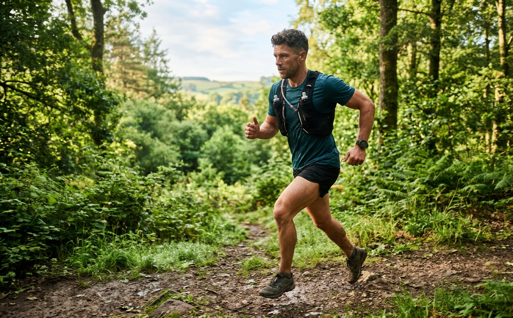

Mon sport préféré
Le raid multisports consiste à enchaîner plusieurs disciplines sans s'arrêter : course à pied, VTT, canoë, course d'orientation... Il faut de l'endurance, de la stratégie et de l'esprit d'équipe.
Je pratique aussi l'athlétisme, qui m'apporte la vitesse et la régularité à l'entraînement.

Les disciplines que je pratique
- Course à pied (trail et athlétisme)
- VTT
- Canoë-kayak
- Course d'orientation
Aller plus loin
Découvre l'enchaînement d'une épreuve sur la page Le parcours, ou mes résultats sur la page Compétitions.
Site officiel de la fédération : Fédération Française d'Athlétisme.